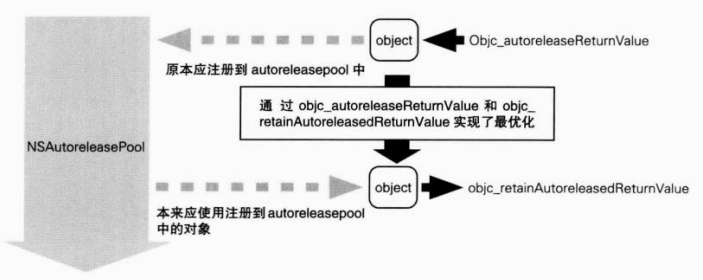
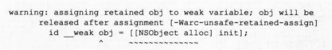
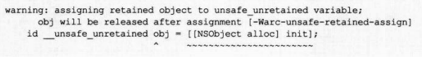
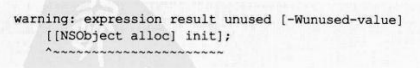

苹果的官方说明中称,ARC是“由编译器进行内存管理”的,但实际上只有编译器是无法 完全胜任的,在此基础上还需要 Objective-C运行时库的协助。也就是说,ARC由以下工具、库 来实现。
如果按照苹果的官方说明,假设仅由编译器进行ARC式的内存管理,那么__weak修饰符 也完全可以使用在ios4和 OS X Snow Leopard中。但实际上,在编译用于ioS4和 OS X Snow Leopard的应用程序时,并不链接一般使用的库,而是使用 libarclite iphoneosa或 libarclite macosx. a这些旧Os上用于实现ARC的库。 不过由于 libarclite的源代码没有公开,以上只是一个推测,但基于安装在iOs4和OSx Snow Leopard上的遗留框架和运行时库的功能,无论怎样静态链接用于ARC的库,也不能在对 象废弃时将__weak变量初始化为nil(空弱应用)。 那么下面就让我们彻底地忘记旧OS的事,基于实现来研究一下ARC吧。在这一节,将围 绕 clang汇编输出和objc4库(主要是 runtime/objc-arr.mm)的源代码进行说明。
赋值给附有__strong修饰符的变量在实际的程序中到底是怎样运行的呢?
{
id __strong obj = [(NsObject alloc] init];
}
在编译器选项“-S”的同时运行 clang,可取得程序汇编输出。看看汇编输出和objc4库的源 代码就能够知道程序是如何工作的。该源代码实际上可转换为调用以下的函数。为了便于理解, 以后的源代码有时也使用模拟源代码。
/*编译器的模拟代码*/ id obj = objc_msgSend(Nsobject, @selector(alloc)); objc_msgSend (ob, @selector(init)); objc_release(ob]);
如原源代码所示,2次调用 objc_msgSend方法(allc方法和init方法),变量作用域结束时 通过 objc_release释放对象。虽然ARC有效时不能使用 release方法,但由此可知编译器自动插 入了 release。下面我们来看看使用 alloc/new/copy/mutableCopy以外的方法会是什么情况。
id __strong obj= [NSMutableArray array];
虽然调用了我们熟知的 NSMutableArray类的aray类方法,但得到的结果却与之前稍有不同。
/*编译器的模拟代码*/ id obj= objc_msgSend(NSMutableArray, @selector (array)); objc_retainAutoreleasedReturnValue(obj); objc_release(obj);
虽然最开始的aray方法的调用以及最后变量作用域结束时的 release与之前相同,但中间的 objc_retainAutoreleasedReturn Value函数是什么呢? obj_retainAutoreleasedReturn Value函数主要用于最优化程序运行。顾名思义,它是用于 自己持有( retain)对象的函数,但它持有的对象应为返回注册在 autoreleasepool中对象的方 法,或是函数的返回值。像该源代码这样,在调用 alloc/new/copy/ mutable Copy以外的方法,即 NSMutable Array类的aray类方法等调用之后,由编译器插入该函数。 这种 objc_retainAutoreleasedReturn Value函数是成对的,与之相对的函数是obic autoreleaseReturm value。它用于 alloc/new/copy/mutable Copy方法以外的 NSMutableArray类的 aray类方法等返回对象的实现上。下面我们看看 NSMutableArray类的aray类通过编译器会进 行怎样的转换。
-(id)array{
return [[NSMutableArray alloc] init];
}
以下为该源代码的转换,转换后的源代码使用了 objc autoreleaseReturn value函数
*编译器的模拟代码*/
+(id)array{
id obj = objc_msgSend (NSMutableArray, @selector (alloc));
objc_msgSend (obj, @selector (init));
return objc_autoreleaseReturnValue(obj);
}
像该源代码这样,返回注册到 autoreleasepool中对象的方法使用了objc autoreleaseReturm value函数返回注册到 autoreleasepool中的对象。但是 objc_autoreleaseReturn Value 函数同 objc_autorelease函数不同,一般不仅限于注册对象到 autoreleasepool中。
objc_autoreleaseReturnvalue函数会检查使用该函数的方法或函数调用方的执行命令列表,如 果方法或函数的调用方在调用了方法或函数后紧接着调用 objc_retain AutoreleasedReturnValue() 函数,那么就不将返回的对象注册到 autoreleasepool中,而是直接传递到方法或函数的调用方。 objc_retainAutoreleasedReturmValue函数与 objc retain函数不同,它即便不注册到 autoreleasepoo 中而返回对象,也能够正确地获取对象。通过 objc_autoreleaseReturn value函数和obic_retainAutoreleasedReturn Value函数的协作,可以不将对象注册到 autoreleasepool中而直接传递, 这一过程达到了最优化①。如图1-22所示
就像前面我们看到的一样,__weak修饰符提供的功能如同魔法一般。
这些功能像魔法一样,到底发生了什么,我们一无所知。所以下面我们来看看它们的实现。
{
id __weak objl = obj
}
假设变量obj附加 __strong修饰符且对象被赋值。
/*编译器的模拟代码*/ id objl; objc initWeak(&objl, obj); objc_destroyWeak(&obj1);
通过 objc_initWeak函数初始化附有__weak修饰符的变量,在变量作用域结束时通过objc destroyWeak函数释放该变量。 如以下源代码所示, objc init Weak函数将附有wak修饰符的变量初始化为0后,会将赋 值的对象作为参数调用 objc_storeWeak函数。
obj1=0; objc_storeWeak(&objl, obj);
objc_destroyWeak函数将0作为参数调用 objc_storeWeak函数。
objc_storeWeak(&obj1, 0);
即前面的源代码与下列源代码相同。
/*编译器的模拟代码*/ id obj1; obj1 = 0; obj_storeWeak(&obj1,obj); obj_storeWeak(&obj1,0);
objc_storeWeak函数把第二参数的赋值对象的地址作为键值,将第一参数的附有__weak修 饰符的变量的地址注册到weak表中。如果第二参数为0,则把变量的地址从weak表中删除。 weak表与引用计数表(参考1.24节)相同,作为散列表被实现。如果使用weak表,将废 弃对象的地址作为键值进行检索,就能高速地获取对应的附有__weak修饰符的变量的地址。另 外,由于一个对象可同时赋值给多个附有__weak修饰符的变量中,所以对于一个键值,可注册 多个变量的地址。 释放对象时,废弃谁都不持有的对象的同时,程序的动作是怎样的呢?下面我们来跟踪观 察。对象将通过 objc release函数释放。
对象被废弃时最后调用的 objc clear deallocating函数的动作如下:
根据以上步骤,前面说的如果附有__weak修饰符的变量所引用的对象被废弃,则将nil赋 值给该变量这一功能即被实现。由此可知,如果大量使用附有__weak修饰符的变量,则会消耗 相应的CPU资源。良策是只在需要避免循环引用时使用__weak修饰符。 使用__weak修饰符时,以下源代码会引起编译器警告。
id __weak obj=[[NSObject alloc] init]:
因为该源代码将自己生成并持有的对象赋值给附有__weak修饰符的变量中,所以自己不能 持有该对象,这时会被释放并被废弃,因此会引起编译器警告。
编译器如何处理该源代码呢?
/*编译器的模拟代码*/ id obj id tmp = objc_msgSend(NSObject, @selector(alloc)); objc_msgSend(tmp, @selector (init)); objc_initWeak(&obj, tmp); objc_release(tmp); objc_destroyWeak(&object);
虽然自己生成并持有的对象通过 objc_initWeak函数被赋值给附有__weak修饰符的变量中, 但编译器判断其没有持有者,故该对象立即通过 objc release函数被释放和废弃。 这样一来,nil就会被赋值给引用废弃对象的附有__weak修饰符的变量中。下面我们通过 NSLOg函数来验证一下。
id __weak ob]=[[NSObject alloc] init] NSLog(@"obj=%@", obj);
以下为该源代码的输出结果,其中用%@输出nil
obj=(null)
如前所述,以下源代码会引起编译器警告。
id __weak ob] =[[NSObject alloc] init];
这是由于编译器判断生成并持有的对象不能继续持有。附有__unsafe_unretained修饰 符的变量又如何呢?
id __unsafe_unretained obj=[[NSObject alloc] init];
与__weak修饰符完全相同,编译器判断生成并持有的对象不能继续持有,从而发出警告。
该源代码通过编译器转换为以下形式。
/*编译器的模拟代码* id obj = objc_msgSend(NSobject, selector (alloc)); objc_msgSend(obj, @selector (init)); objc_release(obj);
objc_release函数立即释放了生成并持有的对象,这样该对象的悬垂指针被赋值给变量 obj中。 那么如果最初不赋值变量又会如何呢?下面的源代码在ARC无效时必定会发生内存泄漏。
[[NSObject alloc] init];
由于源代码不使用返回值的对象,所以编译器发出警告。
可像下面这样通过向void型转换来避免发生警告。
(void)[[NSObject alloc] init];
不管是否转换为void,该源代码都会转换为以下形式
/*编译器的模拟代码*/ id tmp = objc_msgSend(NSObject, @selector(alloc)); objc_msgSend(tmp, @selector(init)); objc_release(tmp);
虽然没有指定赋值变量,但与赋值给附有__unsafe_unretained修饰符变量的源代码完 全相同。由于不能继续持有生成并持有的对象,所以编译器生成了立即调用 objc_release函 数的源代码。而由于ARC的处理,这样的源代码也不会造成内存泄漏。 另外,能调用被立即释放的对象的实例方法吗?
(void)[[[NSObject alloc] init] hash];
该源代码可变为如下形式
/*编译器的模拟代码* id tmp = objc_msgSend(NSObject, @selector (alloc)); objc_msgSend (tmp, @selector (hash));
在调用了生成并持有对象的实例方法后,该对象被释放。看来“由编译器进行内存管 理”这句话应该是正确的。
这次我们再用附有__weak修饰符的变量来确认另一功能:使用附有__weak修饰符的变量, 即是使用注册到 autoreleasepool中的对象
id __weak obj1 =obj SLOg(@"%@",obj1);
该源代码可转换为如下形式
id objl; objc_initweak(&ob]l, obj); id tmp = objc loadweakRetained(&obj1); objc autorelease(tmp); NSLog(e"e",tmp) objc_destroyWeak(&obj1);
与被赋值时相比,在使用附有__weak修饰符变量的情形下,增加了对 objc load WeakRetaine 函数和 objc autorelease函数的调用。这些函数的动作如下。
由此可知,因为附有__weak修饰符变量所引用的对象像这样被注册到 autoreleasepool中, 所以在@ Dautoreleasepool块结束之前都可以放心使用。但是,如果大量地使用附有__weak修饰 符的变量,注册到 autoreleasepool的对象也会大量地增加,因此在使用附有__weak修饰符的变 量时,最好先暂时赋值给附有 __strong修饰符的变量后再使用。 比如,以下源代码使用了5次附有__weak修饰符的变量o。
id __weak o= obj NSLog(@"1 %@",o); NSLog(@"2 %@", o); NSLog(@ 3 %@",o); NSLog(@4 %@",o); NSLog(@"5 %@", o);
相应地,变量o所赋值的对象也就注册到 autoreleasepool中5次。
objc[14481]:########### objc [14481]: AUTORELEASE POOLS for thread Oxad0892c0 objc[14481]: 6 releases pending. objc【14481]:[0x6a85000 PAGe (hot)(cold) objc[14481]:[0x6a85028]############## POOL0x6a85028 objc[14481]:【0x6a8502c 0x6719e40 NSObject objc[14481]:[ox6a85030 objc[14481]:[0x6a85034] objc[14481]:【0x6a85038] objc【14481]:[0x6a8503c] 0x6719e 40 NSobject objc[14481]:#########
将附有__weak修饰符的变量o赋值给附有__strong修饰符的变量后再使用可以避免此类 问题。
id __weak o= obj id tmp = o; NSLog(@"1 %@", tmp); NSLog(@"2 %@", tmp); NSLog(@"3 %@",tmp); NSLog(e"4 %@",tmp); NSLog(@"5 %@",tmp);
在“tmp=o;"时对象仅登录到 autoreleasepool中1次。
objc【14481]:######## objc[14481]: AUTORELEASE POOLs for thread Oxado892c0 objc[14481]: 2 releases pending. objc[14481]:【ox6a85000 PAGE (hot) (cold) objc[14481]:[0x6a85028]###########PooL0x6a85028 objc[14481]:[0x6a8502c 0x6719e 40 NSObject objc[14481]:#########
在ios4和 OS X Snow Leopard中是不能使用__weak修饰符的,而有时在其他环境下也不能 使用。实际上存在着不支持__weak修饰符的类。 例如 NSMach Port类就是不支持__weak修饰符的类。这些类重写了 retain/release并实现该 类独自的引用计数机制。但是赋值以及使用附有__weak修饰符的变量都必须恰当地使用objc4 运行时库中的函数,因此独自实现引用计数机制的类大多不支持__weak修饰符。 不支持__weak修饰符的类,其类声明中附加了“ attribute(( objc are weak reference unavailable))”这一属性,同时定义了 NS AUTOMATED REFCOUNT WEAK UNAVAILABLE。 如果将不支持__weak声明类的对象赋值给附有__weak修饰符的变量,那么一旦编译器检验出 来就会报告编译错误。而且在 Cocoa框架类中,不支持__weak修饰符的类极为罕见,因此没有 必要太过担心。
实际上还有一种情况也不能使用__weak修饰符。 就是当 allowsWeak Reference/ retain Weak Reference实例方法(没有写入 NSobject 接口说明文档中)返回NO的情况。这些方法的声明如下:
-(BOOL)allows weakReference; -(BOOL)retainweakReference:
在赋值给__Weak修饰符的变量时,如果赋值对象的 allows Weak Reference方法返回 NO,程序将异常终止。
cannot form weak reference to instance (0x753e180) of class Myobject
即对于所有 allows Weak Reference方法返回NO的类都绝对不能使用__weak修饰符。 这样的类必定在其参考说明中有所记述。 另外,在使用__Weak修饰符的变量时,当被赋值对象的 retainWeak Reference方法返 回NO的情况下,该变量将使用“n。如以下的源代码:
id strong obj = [[NSObjectalloc] init] id __weak o = obj SLOg(@"1 %@",o); NSLog(@"2 %@",o); NSLog (e"3 %@",o); NSLog(e"4 %@",o); NSLog(@"5 %@:,o);
由于最开始生成并持有的对象为附有__strong修饰符变量obj所持有的强引用,所以 在该变量作用域结束之前都始终存在。因此如下所示,在变量作用域结束之前,可以持续使 用附有__Weak修饰符的变量o所引用的对象。
1 <NSObject: 0x753el80> 2 <NSObject: 0x753el80> 3 <NSObject: 0x753el80> 4 <NSObject: 0x753e180> 5 <NSObject: 0x753e180>
下面对 retain Weak Reference方法进行试验。我们做一个 My Object类,让其继承NSObject类并实现 retain WeakReference方法。
@interfaceMyobject NSObject
NSUInteger count;
@end
@implementationMyobject{
-(id)init{
self= [super init]
return self;
}
-(BOOL)retainweakReference{
if (++count > 3)
return No;
return [super retainweakReference];
}
}
@end
该例中,当 retainWeakReference方法被调用4次或4次以上时返回NO。在之前的源 代码中,将从 NSObject类生成并持有对象的部分更改为 MyObject类。
id __strong obj= [Myobject alloc] init]; id __weak o = obj; NSLog(@"l %@", o); NSLog(@"2 %@", o); SLOg(@"3 %@",o); NSLog(@"4 %@",o); NSLog(@"5 %@",o);
以下为执行结果。
1 <Myobject: 0x753el80> 2 <Myobject: 0x753e180> 3 <Myobject: 0x753e180> 4(nu11) 5(nu11)
从第4次起,使用附有__weak修饰符的变量o时,由于所引用对象的 retain WeakRef erence方法返回NO,所以无法获取对象。像这样的类也必定在其参考说明中有所记述。 另外,运行时库为了操作__weak修饰符在执行过程中调用 allows Weak Reference retainWeak Reference方法,因此从该方法中再次操作运行时库时,其操作内容会永久等 待。原本这些方法并没有记入文档,因此应用程序编程人员不可能实现该方法群,但如果因 某些原因而不得不实现,那么还是在全部理解的基础上实现比较好。